The New Boutiques Integrator
Pierre RiouxCBRAIN Internal Documentation, September 2021
A Presentation In Several Parts:
- 1. What Is Boutiques (3 slides)
- 2. The Models (5 slides)
- 3. CbrainTask Class Hierarchy (3 slides)
- 4. Standard Task Integration (4 slides)
- 5. Old Boutiques Integration (13 slides)
- New Boutiques Integration:
- 6. Boot-time (12 slides)
- 7. Run-time (8 slides)
- 8. View Code (16 slides)
- 9. Code Conventions (6 slides)
- 10. Customization And Configuration (7 slides)
Part 1
What Is Boutiques
The Project
- Started in 2015 by Tristan Glatard
- Originally specific to generating CBRAIN task code
- Eventually made into a generic tool description platform
- Modern code base is mostly in Python
- Includes full specifications and utilities
A Descriptor
{
"tool-version": "6.0.4",
"name": "oxford_asl",
"author": "Oxford Centre for Functional MRI of the Brain (FMRIB)",
"description": "oxford_asl is part of BASIL",
"command-line": "oxford_asl [INPUT_FILE] [OUTPUT_DIR] [MASK]...",
"schema-version": "0.5",
"container-image": {
"image": "mcin/docker-fsl:latest",
"index": "docker://",
"type": "singularity"
},
"inputs": [ stuff ],
"output-files": [ stuff ],
"custom": { stuff }
}
Part 2
The Models
Tool
- Identifies and describes a scientific tool
- One record for all deployments
- Database table: tools
Main Attributes
| id | 3 |
| name | "Civet" |
| cbrain_task_class_name | "CbrainTask::Civet" |
ToolConfig
- Identifies and describes an instance of a tool
- Many per tool and per Execution Server (Bourreau)
- Database table: tool_configs
Main Attributes
| id | 513 |
| tool_id | 3 ("Civet") |
| bourreau_id | 56 ("Beluga") |
| version_name | "2.1.1" |
| (config stuff) | (path, env, etc) |
CbrainTask
- Tracks a single cluster job
- Is associated to one ToolConfig
(and thus, to one Tool and one Bourreau) - Database table: tasks
Main Attributes
| id | 60021 |
| tool_config_id | 513 (Tool "Civet" on "Beluga") |
| type | CbrainTask::Civet (Ruby class from Tool) |
| cluster_jobid | 285283 (SLURM ID on Beluga) |
| status | "On CPU" |
Relationships
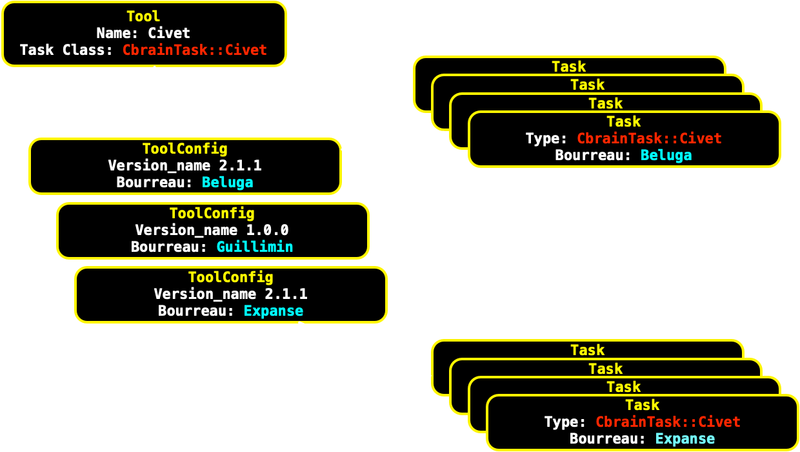Part 3
CbrainTask Class Hierarchy
Base Classes
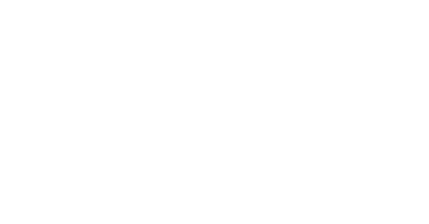Portal vs Bourreau
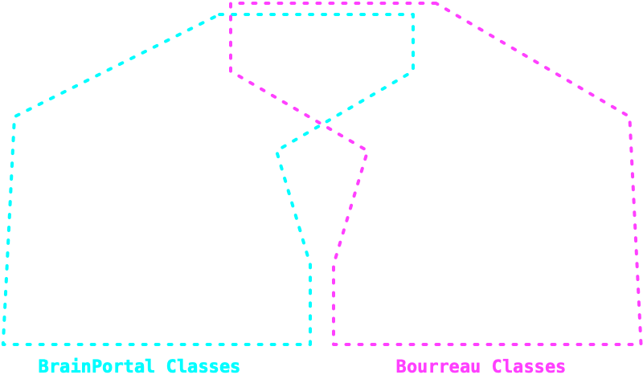Part 4
Standard Task Integration
Plugins
CBRAIN uses plugins to extend its functionality.
Plugins can provide new Userfile models,
new libraries and new task classes.
This allow the CBRAIN code base to be independent
of the code that provides these extended functions.
Plugins can be developed by other developers
and CBRAIN admins can just install them.
But this requires all plugin code to follow certain coding
conventions (APIs) and structure their code in a particular way.
The CBRAIN code base comes with one built-in plugin,
cbrain-plugins-base, which provides some simple
Userfile classes and a few example task classes.
Plugins Files Structure
| File | Role | Class declaration |
|---|---|---|
| PLUGIN.../portal/tool_name.rb | Code loaded by Portal | class CbrainTask::ToolName < PortalTask |
| PLUGIN.../bourreau/tool_name.rb | Code loaded by Bourreau | class CbrainTask::ToolName < ClusterTask |
| PLUGIN.../views/_task_params.html.erb | Code rendered by Portal |
For more info:
Ruby Code File Locations
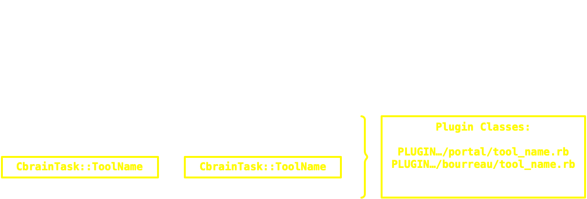Part 5
Old Boutiques Integration
Old Integration Flow
- Integrations happen during boot
- This directory is scanned:
cbrain_plugins/installed-plugins/cbrain_task_descriptors - It contains pairs of files, e.g.
tool_name.json, tool_name.rb - The .rb file is a symlink to a common loader
- It invokes the integrator code with:
- 'ToolName' as a name for the classes to create, created from the basename of the file
- The .json file content
- Virtual files are then created and loaded, different for each descriptor
Old Integration Diagram
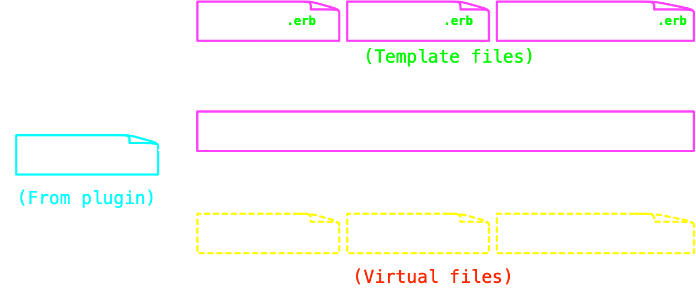Old Templating: Source
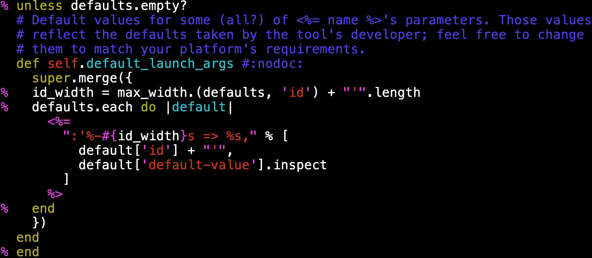 Excerpt from portal.rb.erb with syntax highlightingOld Templating: Levels
%unless defaults.empty?
# Default values for some (all?) of <%= name %>'s parameters. Those values
# reflect the defaults taken by the tool's developer; feel free to change
# them to match your platform's requirements.
def self.default_launch_args #:nodoc:
super.merge({
% id_width = max_width.(defaults, 'id') + "'".length
% defaults.each do |default|
<%=
":'%-#{id_width}s => %s," % [
default['id'] + "'",
default['default-value'].inspect
]
%>
% end
})
end
% end
In YELLOW: code executed at integration timeIn WHITE: literal code ending up in the class
Old Templating: Result 1
If the JSON descriptor has no defaults for any of its inputs:# (no Ruby statements end up in the generated code)Generated Portal code
Old Templating: Result 2
If the JSON descriptor has some defaults for any of its inputs:
# Default values for some (all?) of CivetRerun's parameters. Those values
# reflect the defaults taken by the tool's developer; feel free to change
# them to match your platform's requirements.
def self.default_launch_args #:nodoc:
super.merge({
:'model' => "icbm152nl_09s",
:'template' => "0.50",
:'lsq' => 12,
:'interp' => "trilinear",
:'n3_dist' => 75,
:'pve_advanced' => true,
:'surfreg_model' => "icbm152MCsym",
:'combine_surface' => true,
:'thickness_methods' => "tlaplace",
:'thickness_kernels' => "30",
:'resample_surface' => true,
:'surf_atlas' => "lobes",
})
end
Params Template Of Template
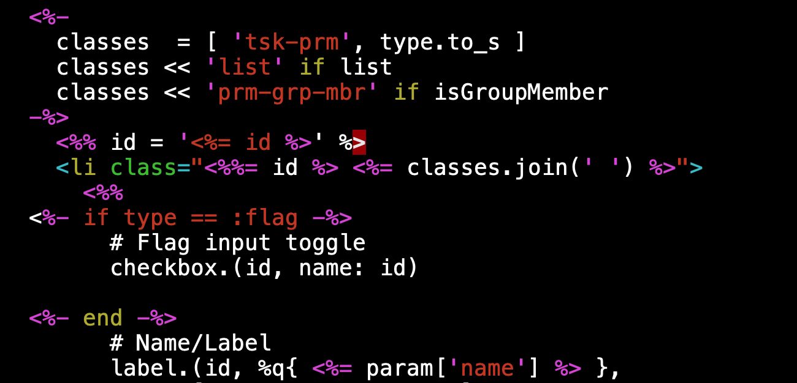 Excerpt from task_params.html.erb.erb with syntax highlightingNote that even my text editor gets confused!
Params Templates Levels
<%-
classes = [ 'tsk-prm', type.to_s ]
classes << 'list' if list
classes << 'prm-grp-mbr' if isGroupMember
-%>
<%% id = '<%= id %>' %>
<li class="<%%= id %> <%= classes.join(' ') %>">
<%%
<%- if type == :flag -%>
# Flag input toggle
checkbox.(id, name: id)
<%- end -%>
# Name/Label
label.(id, %q{ <%= param['name'] %> },
(91 lines skipped, I am not kidding)
%>
</li>
In YELLOW: code executed at integration timeIn WHITE: templated code ending up in the class
In CYAN: literal code ending up in the HTML
Generated Params HTML.erb
<% id = 'combine_surface' %>
<li class="<%= id %> tsk-prm flag prm-grp-mbr">
<%
# Flag input toggle
checkbox.(id, name: id)
# Name/Label
label.(id, %q{ Combine left/right surfaces },
optional: true,
flag: '-combine-surfaces'
)
# Description
description.(<<-'DESC',true)
Combine left/right surfaces
DESC
%>
</li>
Sample generated _task_params.html.erb
Generated Params HTML
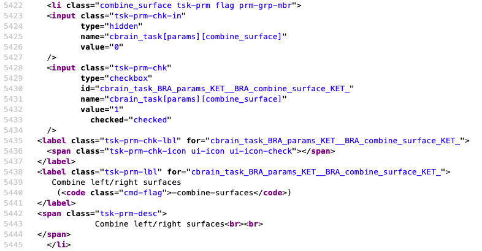Browser HTML
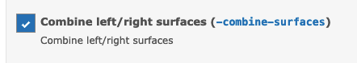Old Integration: Consequences
- There is a single set of templates, each quite big
- These templates must try to generate all the features of Boutiques
- The templates are very complicated to edit and maintain
- At run time, the descriptors are no longer available
See for instance, some old integrator templates:
Part 6
New Boutiques Integration
(finally!)Boot-time Integration
Goals
Maintenance
- Remove the templating system
- Maintain compatibility with old integrator
Task Class Implementation
- All tasks inherit from a new base class
- This base class derives its behavior from a descriptor at run time
- All behaviors are provided by small methods
- The task's class itself is initially empty
View Code Implementation
- All the view templates are provided by small partials
- Individual partials can be replaced/overriden
- The new set of partials provides all the exact same UI as the original integrator
Helper Class For Descriptors
A new support module was created: BoutiquesSupportIt's located in lib/boutiques_support.rb
irb> desc = BoutiquesSupport::BoutiquesDescriptor.new_from_file "civet_rerun.json"
irb> desc.class
BoutiquesSupport::BoutiquesDescriptor
irb> desc[:name]
"CivetRerun"
irb> desc['name']
"CivetRerun"
irb> desc.name
"CivetRerun"
irb> desc['tool-version']
"2.1.1"
irb> desc.tool_version # note the _ instead of -
"2.1.1"
irb> desc.inputs.class
Array
irb> desc.inputs.first
{"name"=>"Existing CIVET output", "id"=>"civet_in", "description"=>"..."}
irb> desc.inputs.first.class
BoutiquesSupport::Input
Helper Class Usage
The new Boutiques helper classes are implemented assubclasses of my RestrictedHash class.
This means they make sure all attributes accessed through methods or hash-like [] are are allowed in Boutiques.
# This works:
desc['name'] = 'MyNewName'
# These three will raise an exception: there is no 'email' field in
# the boutiques schema
desc.email # reading as a method
desc.email = 'pierre.rioux@mcgill.ca' # write as method
desc['email'] = 'pierre.rioux@mcgill.ca' # write as hash
In general, the new integration code uses the method access scheme (desc.abc) instead of the hash access scheme (desc['abc'])
Plugin File Location
A descriptor mytool.json is integrated when located in the subdirectory called boutiques_descriptors.Typical plugin files:
plugindir/cbrain_task/hello/portal/hello.rb # Tool 'hello', unrelated, standard integration plugindir/cbrain_task/hello/bourreau/hello.rb plugindir/cbrain_task/hello/views/_task_params.html.erb plugindir/userfiles/mymodel/mymodel.rb # Some unrelated model plugindur/cbrain_task_descriptors/oldtool.json # Tool 'oldtool', using old btq integration plugindir/boutiques_descriptors/mytool.json # Tool 'mytool', new btq integration
Symbolic links to these files are created in a special install directory by the CBRAIN sysadmin, at install time.
In particular, all the boutiques desciptors for the new integration end up linked into this new system subdirectory:
{BrainPortal|Bourreau}/cbrain_plugins/installed-plugins/boutiques_descriptors
New Integration Boot
- The boot process is faster and lighter
- Unlike the old integrator, we have:
- No special fake class loader
- No ruby code templates to render and load dynamically
- No view templates to render and store in memory
- All we do have is a set of JSON files in the install directory
Boot-time Summary
At boot time, we scan all the .json files installed.For each JSON file:
- We load and store the JSON descriptor
- If the descriptor is for a new Tool, we auto configure the tool
- If the descriptor is for a new version, we auto configure a ToolConfig
- We create the task handler class as BoutiquesTask::ToolName
The next four slides describe each of these steps.
Boot 1: Loading The Descriptors
For each JSON file:- We load the descriptor's content into a BoutiquesSupport::BoutiquesDescriptor object
- We extract two values: name and tool-version
- We store in a global, persistent hash the association
[ tool_name, tool_version ] => full_descriptor_content - This hash is called the descriptor register, and is maintained by the ToolConfig class (mostly because it will be used by actual ToolConfigs later on)
Boot 2: Creating The Tool
For each JSON file:- We examine the name again
- If a tool with that name already exists, we move on
- Otherwise, we create a new Tool in the DB
- The Tool's cbrain_task_class_name (see Part 2) is set to BoutiquesTask::ToolName
- This string represents the tool's task's implementation class
- The class itself is created later (see you in two slides)
Boot 3: Creating The Tool Config
For each JSON file:- Note: all of this only happens when the current Rails app is a Bourreau
- We examine the name and tool-version again
- If a ToolConfig for these two values already exists, we move on
- Otherwise, we create a new ToolConfig in the DB:
- Tool: (the Tool found in the previous slide)
- version_name: tool-version
- bourreau_id: (the current Rails app ID)
Boot 4: Class Creation
For each JSON file:We create, in memory, a new Ruby class that corresponds to the string BoutiquesTask::ToolName configured in the Tool object.
That class is an empty class that inherits everything.
On the portal side, it behaves like this piece of code:
class BoutiquesTask::ToolName < BoutiquesPortalTask
end
class BoutiquesTask::ToolName < BoutiquesClusterTask
end
New Integrator Class Hierarchy
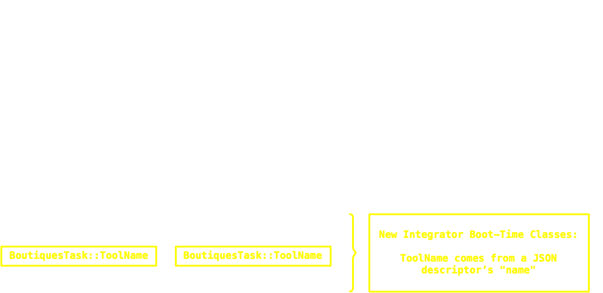Part 7
New Boutiques Integration
Ruby Run-time Integration
Portal Calls
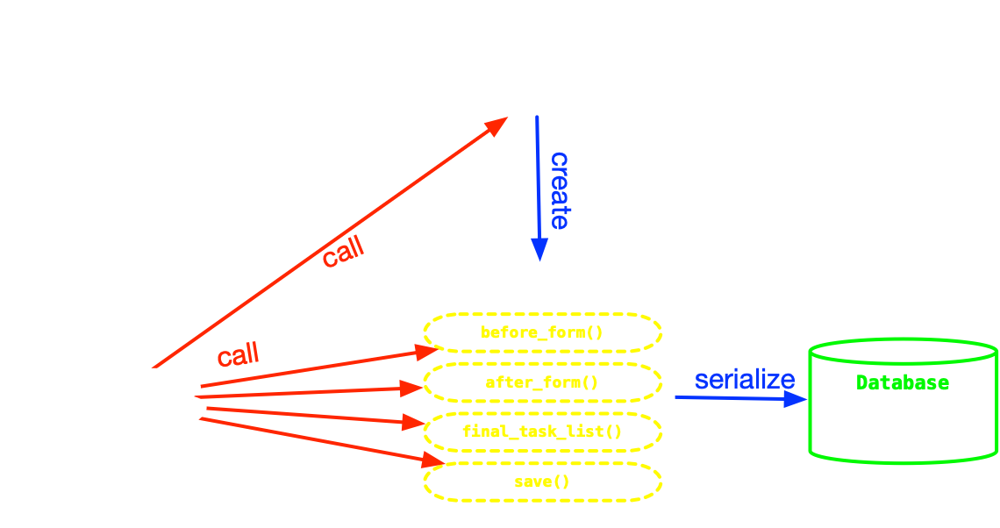Bourreau Calls
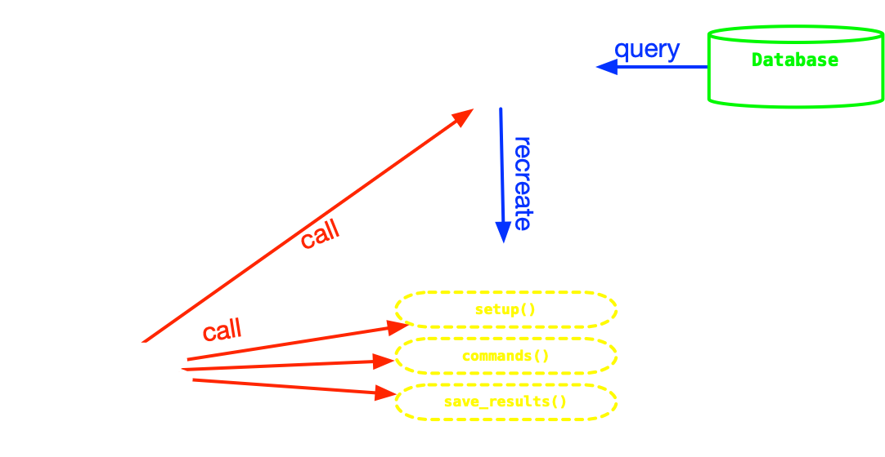Three Integrators Recap
Everything in yellow in the previous slides is code or templates designed specifically for each tool.Here's what is responsible for creating these things under the three integrators:
- Standard Ruby Integration:
a programmer writes the Ruby files and templates - Old Boutiques Integretor:
at boot time, the descriptor is loaded and code and views are generated from templates - New Boutiques Integrator:
a single set of static Ruby files and templates exists but their run-time behavior changes based on the content of a descriptor
Portal: How The Descriptor Is Fetched
class BoutiquesPortalTask < PortalTask
# This method returns the BoutiquesDescriptor
# directly associated with the ToolConfig for the task
def boutiques_descriptor
self.tool_config.boutiques_descriptor
end
#...
end
class BoutiquesTask::ToolName < BoutiquesPortalTask
# Nothing at all in the class!
end
Portal: How The Task Behavior Is
Controlled By A Descriptor
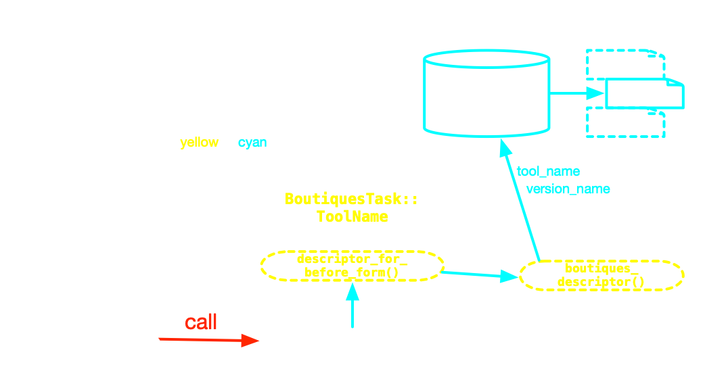
Bourreau: How The Descriptor Is Fetched
class BoutiquesClusterTask < ClusterTask
# This method returns the BoutiquesDescriptor
# directly associated with the ToolConfig for the task
def boutiques_descriptor
self.tool_config.boutiques_descriptor
end
#...
end
class BoutiquesTask::ToolName < BoutiquesClusterTask
# Again, nothing at all in the class!
end
Bourreau: How Task Behavior Is
Controlled By A Descriptor
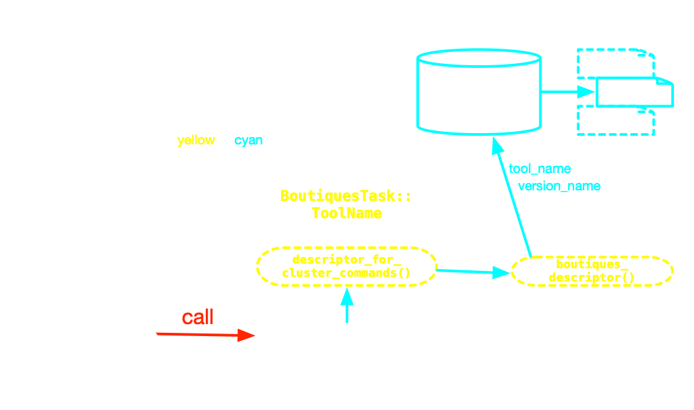
Part 8
New Boutiques Integration
View Code Integration
Separate HTML Partials
The original single large template of template_task_params.html.erb.erb (see part 5)
has been split into a set of smaller templates:
-rw-r--r-- 1 prioux staff 2305 Oct 4 11:00 _boutiques_group.html.erb -rw-r--r-- 1 prioux staff 4127 Oct 4 11:00 _boutiques_input.html.erb -rw-r--r-- 1 prioux staff 970 Oct 4 11:00 _boutiques_preview.html.erb -rw-r--r-- 1 prioux staff 995 Oct 4 11:00 _description.html.erb -rw-r--r-- 1 prioux staff 2326 Oct 4 11:00 _dropdown.html.erb -rw-r--r-- 1 prioux staff 4602 Oct 4 11:00 _edit_help.html.erb -rw-r--r-- 1 prioux staff 28488 Oct 4 11:00 _form_js.html.erb -rw-r--r-- 1 prioux staff 991 Oct 4 11:00 _group_checkbox.html.erb -rw-r--r-- 1 prioux staff 1622 Oct 4 11:00 _html_input.html.erb -rw-r--r-- 1 prioux staff 1905 Oct 4 11:00 _html_input_list.html.erb -rw-r--r-- 1 prioux staff 1811 Oct 4 11:00 _html_select.html.erb -rw-r--r-- 1 prioux staff 1910 Oct 4 11:00 _input_checkbox.html.erb -rw-r--r-- 1 prioux staff 1219 Oct 4 11:00 _input_label.html.erb -rw-r--r-- 1 prioux staff 1216 Oct 4 11:00 _opt_checkbox.html.erb -rw-r--r-- 1 prioux staff 3085 Oct 4 11:00 _show_params.html.erb -rw-r--r-- 1 prioux staff 2530 Oct 4 11:00 _task_params.html.erb
Partials Hierarchy
All these partials invoke each other along these render paths:
_task_params.html.erb
↳ _boutiques_input.html.erb # one or many; see below for def
↳ _boutiques_group.html.erb # zero, one, or many
↳ _group_checkbox.html.erb
↳ _boutiques_input.html.erb # one or many
↳ _opt_checkbox.html.erb
↳ _input_label.html.erb
↳ One of:
_input_checkbox.html.erb
_dropdown.html.erb
_html_input.html.erb
_html_input_list.html.erb
_html_select.html.erb
↳ _description.html.erb
↳ _boutiques_preview.html.erb # just a div
↳ _form_js.html.erb # templated
_show_params.html.erb # separate page
_edit_help.html.erb # separate overlay
Layout Breakdown: All
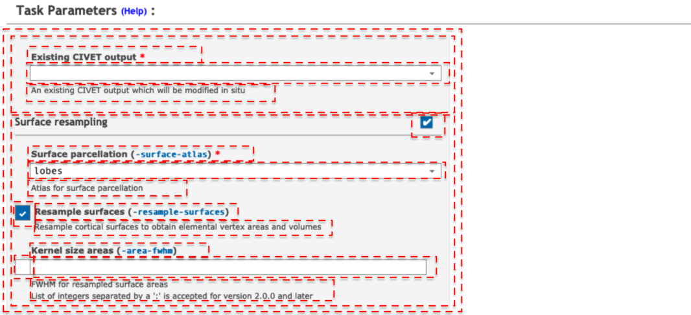Layout Breakdown: Params
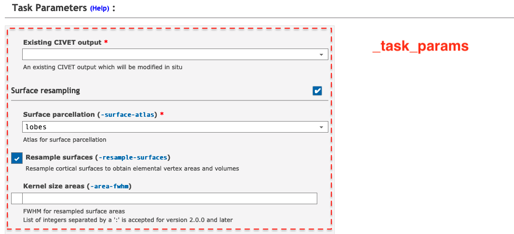Layout Breakdown: Groups
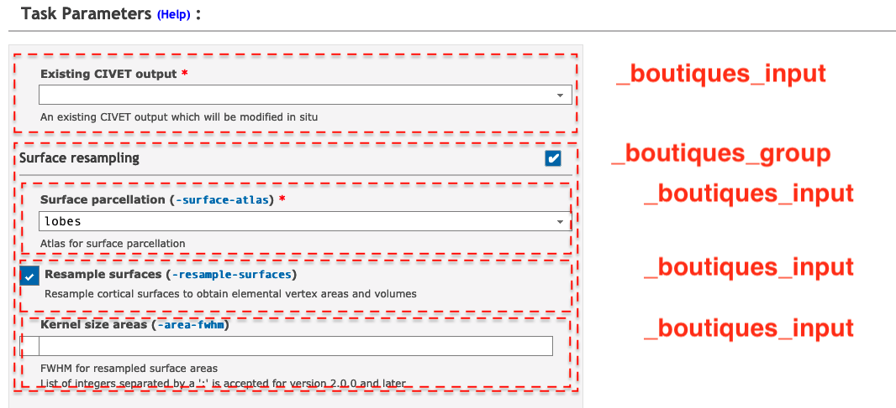Layout Breakdown: Labels
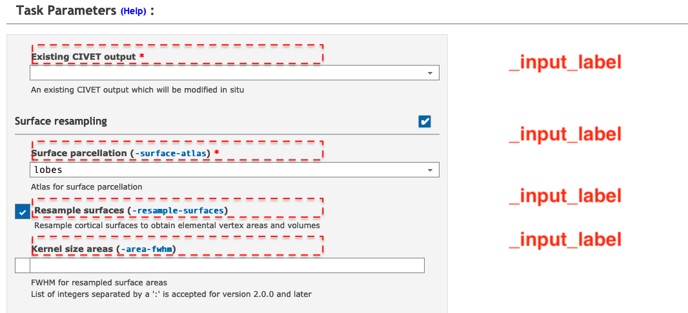Layout Breakdown: Checkboxes
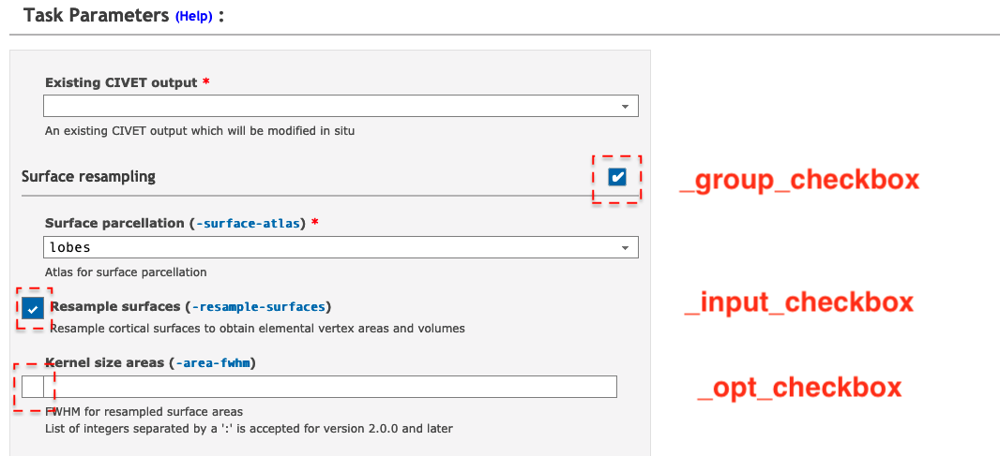Layout Breakdown: Inputs
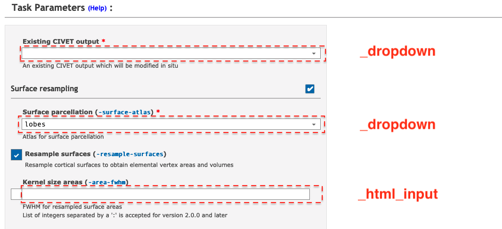Layout Breakdown: Descriptions
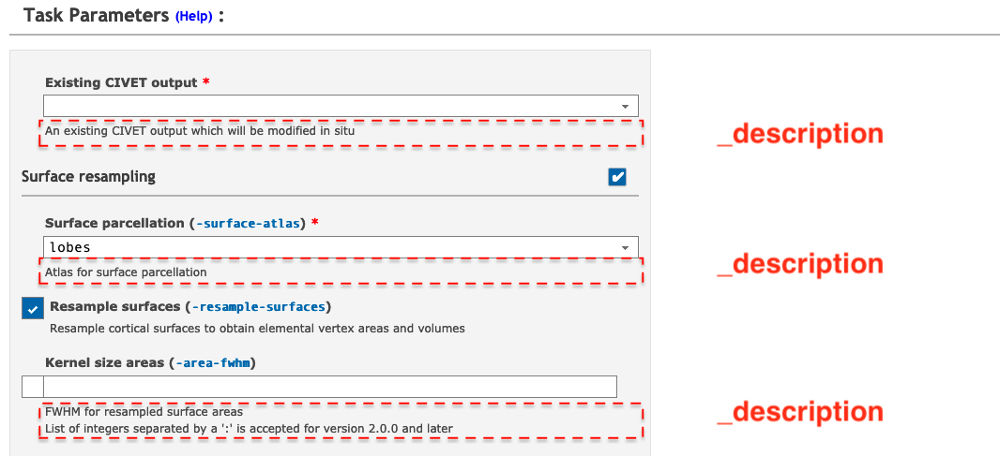Layout Breakdown: Multiple
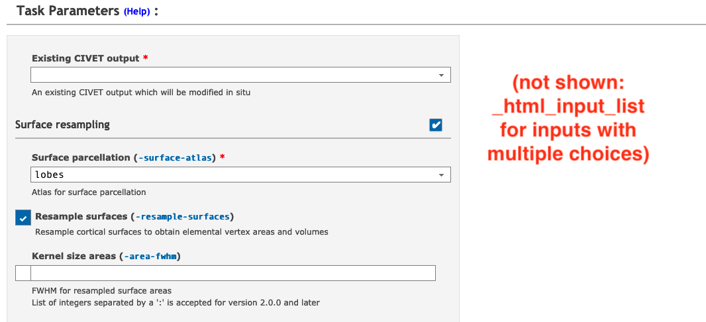Partials Changes
The templating code was modified as follow:
- It was de-templated by one level
- Distinct elements get distinct partials
- The HTML code generated is controlled by @descriptor
- Javascript logic is extracted into a separate file
- The javscript templated code was simplified
Example Partial: Label
This partial receives input (a component of @descriptor) as a local Ruby variable.input is a full BoutiquesSupport::Input object.
<%-
name = input.name
flag = input.command_line_flag
opt = input.optional
-%>
<label class="tsk-prm-lbl" for="<%= input.cb_invoke_html_id %>">
<%= name %>
<% if flag.present? %>
(<code class="cmd-flag"><%= flag %></code>)
<% end %>
<% unless opt %>
<span class="required">*</span>
<% end %>
</label>
About The Javascript
The JavaScript code is templated: within the JS code loaded in the task's form, custom JS code is created by Ruby code.Most of the time, these JS code snippets are small arrays or hashes of things related to the inputs.
The new integrator works like the old integrator in that regard, but the way the substitions are made has been greatly improved for clarity.
The next two slides show the before (old integrator) and after (new integrator).
JS templating in OLD Integrator
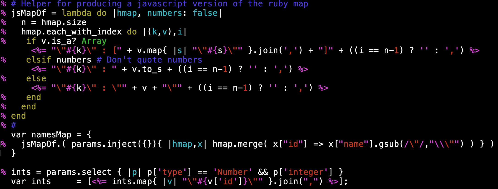 Excerpts from task_params.html.erb.erbJS templating in NEW Integrator
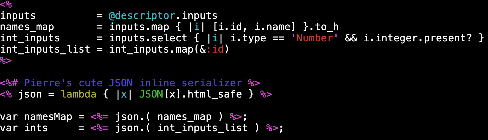 Excerpts from _form_js.html.erbPart 9
New Boutiques Integration
Code Conventions
Naming Things
- The word 'Boutiques' was almost never used in the old integrator code
- The new integrator use it all the time:
- Classes: BoutiquesTask::ToolName
- Classes: BoutiquesSupport, BoutiquesSupport::BoutiquesDescriptor, BoutiquesSupport::BoutiquesInput etc
- Paths: cbrain_plugins/some-plugin/boutiques_descriptors
- Paths: cbrain_plugins/installed-plugins/boutiques_descriptors
BoutiquesSupport Descriptor Methods
The class has many helpful methods:
a = descriptor.inputs
b = descriptor.file_inputs
c = descriptor.required_file_inputs
d = descriptor.list_inputs
what used to be done in the old integrator:
b = params.select { |i| i['type'] == 'File' }
c = params.select { |i| i['type'] == 'File' && ! i['optional'] }
d = params.select { |i| i['list'] }
The 'BoutiquesTask' Class
There is a class called just BoutiquesTask.
It is used as a namespace for holding the real classes
for the tools (e.g. BoutiquesTask::ToolName).
It is not, however, ever instantiated.
It doesn't inherit from anything either:
class BoutiquesTask # not a AR model and does not inherit from no nothin'
Revision_info=CbrainFileRevision[__FILE__] #:nodoc:
end
Importantly, the views subdirectory for that class is where all the partials for the new boutiques integrator are located.
New Convention For Task Params
{
"interface_userfile_ids": [
"14465",
"14469"
],
"sinput1": "14465",
"minput1": "14469",
"my_output_name": "outreport",
"option_a": false,
"option_h": false,
"option_upper_h": true,
"_cbrain_output_du_report_out": [
14510
]
}
{
"interface_userfile_ids": [
"14465",
"14469"
],
"invoke": {
"my_output_name": "outreport",
"sinput1": "14465",
"minput1": "14469",
"option_a": false,
"option_h": false,
"option_upper_h": true
},
"_cbrain_output_du_report_out": [
14510
]
}
New Task Access Method For Params
Instead of accessing params using the long form:
# Old traditional way
opt_a = task.params[:invoke][:option_a]
task.params[:invoke][:option_upper_h] = true
# Through the helper 'invoke_params'
opt_a = task.invoke_params[:option_a]
task.invoke_params[:option_upper_h] = true
def some_task_method
opt_a = invoke_params[:option_a]
end
Part 10
New Boutiques Integration
Customization And Configuration
Override: Task Class 1
As explained in Part 6, by default a descriptor createsa task class named BoutiquesTask::ToolName
class BoutiquesTask::ToolName < BoutiquesPortalTask
end
This class inherits all the basic functionality for providing
a behavior based on a descriptor (here, from BoutiquesPortalTask)
Override: Task Class 2
However, the descriptor can contain an override tospecify an alternate superclass to inherit from:
{
"name": "supertool",
"tool-version": "1.0",
(...)
"custom": {
"cbrain:inherits-from-class": "MySuperHandler"
}
}
class BoutiquesTask::ToolName < MySuperHandler
end
Presumably, MySuperHandler inherits from BoutiquesPortalTask but overrides some of its behavior. The code for MySuperHandler can be packaged within "lib/" in a plugin's structure.
Override: Descriptor Methods 1
The base classes for the new integrator all definemethods that return the same descriptor:
def boutiques_descriptor
self.tool_config.boutiques_descriptor
end
def descriptor_for_before_form
self.boutiques_descriptor
end
def descriptor_for_after_form
self.boutiques_descriptor
end
def descriptor_for_final_task_list
self.boutiques_descriptor
end
#etc...
These are the methods invoked by (respectively)
before_form(), after_form() etc.
Override: Descriptor Methods 2
So, given that the superclass has been overridenas described in the previous slides, the new superclass
can 'temper' with the descriptor and change the behavior
of the integrator:
class MySuperHandler < BoutiquesPortalTask
# Integration with this class removes one input parameter,
# but just during "before_form".
def descriptor_for_before_form
modified_desc = super.dup
modified_desc.inputs.reject! { |input| input.id == 'numcpus' }
modified_desc
end
end
Override: Partials
The set of view partials described in Part 8 are storedin the cbrain-plugins-base plugin, in the "views/" directory
for the task named boutiques_task (which is not itself ever instantiated).
Again, if the superclass has been overriden and it is coded as
a standard task class (e.g. CbrainTask::SuperHandler) within a plugin,
then any partial can be replaced as needed:
boutiques_descriptors/my_tool.json # with cbrain:inherits set to CbrainTask::SuperHandler cbrain_task/super_handler/portal/super_handler.rb cbrain_task/super_handler/bourreau/super_handler.rb cbrain_task/super_handler/view/_input_label.html.erb # custom labels!List of files in an example plugin, with annotations
You only need to redefine the partials that you want, the others will be fetched from the base location.
Override: Descriptor For ToolConfigs
As described in Part 6, descriptors for the new integrator are all loaded and associated with ToolConfig objects, at boot time.
Most of the time, this is enough. However, an admin, using the
interface, can provide or override a ToolConfig's descriptor by
providing a path to a JSON file.
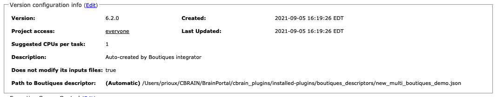
The attribute can have four 'states':
Automatic, Manual, Overriden or None.
The End
Thank you
The base Ruby Integration framework was created by:Pierre Rioux
The original Boutiques Integrator was created by:
Rémi Bernard, Tristan Aumentado-Armstrong
Tristan Glatard, Pierre Rioux
The new Boutiques Integrator was created by:
Pierre Rioux
Project management:
Marc-Étienne Rousseau,
Shawn Brown,
Bryan Caron